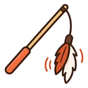
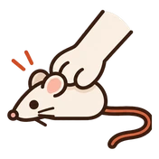
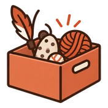
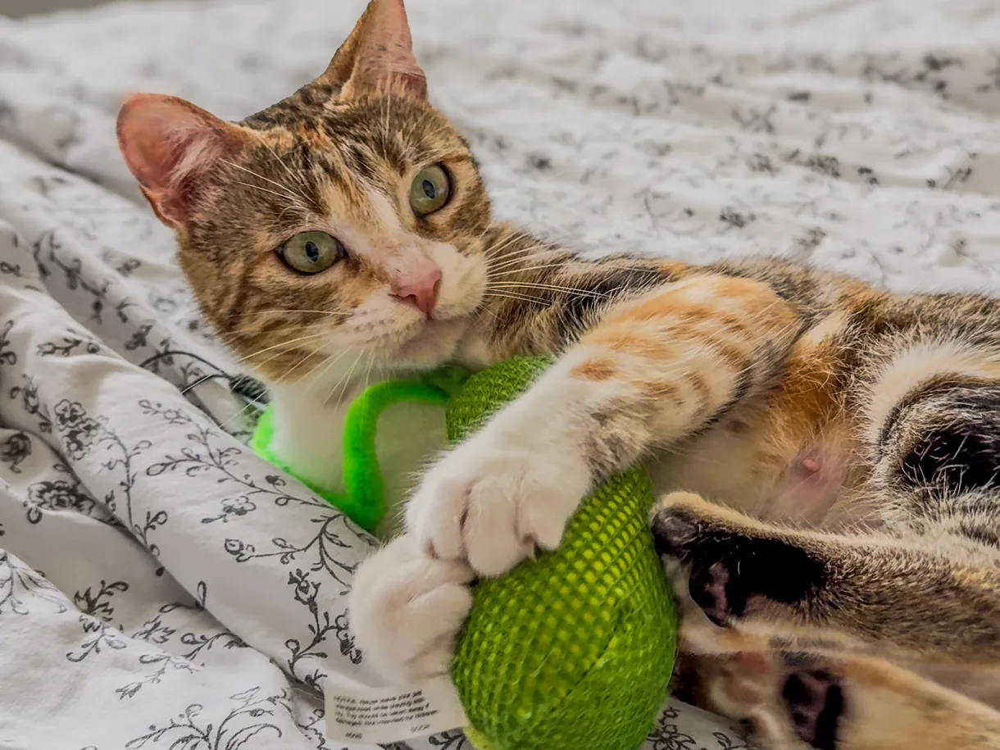

« Il n'est pas joueur. » C'est ce qu'on me dit le plus souvent quand on me parle de jeu en pré-visite.
C'est un verdict, et il tombe presque toujours à côté. Votre chat n'a pas renoncé au jeu, il a fait le tour de ses jouets.
« Mon chat n'est pas joueur »
Vous lui avez acheté une souris et une canne à pêche. Il y a touché 2 soirs, puis plus rien, et vous en avez conclu qu'il n'était pas joueur. Je l'entends dans presque tous les foyers où je passe.
La phrase décrit quelque chose de réel, mais pas un caractère : un jouet qui a fait son temps.
Des chercheurs britanniques ont présenté le même objet à des chats adultes, séance après séance.1 Dès la 3e séance, la réponse de jeu avait presque entièrement disparu.
3 séances. Pas 3 mois.
À la 4e séance, ils ont remplacé le jouet par un jouet de couleurs contrastées. Le jeu est reparti, et il est reparti fort.1
1
Il joue
Nouvel objet, réponse pleine. C'est ce qu'on voit le jour où on rapporte le jouet.
2
Il joue moins
L'objet n'a plus rien à révéler. Il l'a déjà attrapé, mordu, retourné.
3
Il ne joue presque plus
C'est ici qu'on conclut qu'il n'est pas joueur.
4
Un autre jouet sort
Mêmes chats, même journée, même personne au bout de la canne. Seul l'objet a changé.
et la réponse repart comme au premier jour
Un chat qui ignore un jouet acheté il y a 6 mois a simplement fait le tour de la question. Et le nombre de jouets n'y change rien : une enquête auprès de propriétaires a relevé 7 jouets et activités par chat en moyenne, sans trouver le moindre lien entre ce nombre et les problèmes rapportés.2
Le mouvement, lui, change tout. Des chercheurs ont proposé à des chats les mêmes jouets, tantôt animés, tantôt posés au sol.3 Le jouet qui bouge gagne à tous les coups, qu'il sente quelque chose ou non.
Jouer, c'est chasser
Vous venez de le nourrir, et il tourne quand même autour de la canne à pêche. Ça n'a rien d'un caprice. Sa faim et son envie de chasser sont deux choses séparées : des chercheurs ont observé des chats affamés quitter une nourriture appétente pour aller tuer une proie vivante, puis revenir manger.4
Ils ne chassaient pas parce qu'ils avaient faim. Ils chassaient parce qu'une proie bougeait.
La faim ne déclenche pas la chasse, elle l'amplifie. Et elle amplifie le jeu exactement pareil.4 Pour lui, les 2 gestes n'en font qu'un.
Le jeu ne lui apprend pas à chasser
On croit souvent qu'un chaton apprend à chasser en jouant. Des chatons élevés à l'écart, sans personne pour leur montrer, ont eu des réponses de chasse normales dès 11 semaines. Et beaucoup jouer petit ne rend pas meilleur chasseur une fois adulte.4
Le jeu ne fabrique donc pas la mécanique, il la fait tourner. Et elle demande à tourner : les recommandations vétérinaires rangent la possibilité de chasser pour de faux parmi les 5 besoins qu'un logement doit couvrir pour un chat, au même rang que le repos et la nourriture.5
Cette mécanique a un ordre, et c'est toujours le même.6
1
Chercher
La proie apparaît sans qu'il sache d'où. Un jouet posé sous son nez saute cette étape.
2
Traquer
Il s'aplatit et il attend. Ce temps-là demande qu'on ne bouge presque plus.
3
Poursuivre
La proie file en s'éloignant. Une proie qui fonce sur lui n'a aucun sens.
4
Manipuler
Il l'attrape, la retourne, la mord, la bourre de coups de patte arrière.
5
Tuer
Quelque chose cède. Un embout qui se détache, un objet qu'il peut emporter.
6
Consommer
Une friandise ou son repas, juste après. C'est ce qui referme la séquence.
Un jouet qui ne laisse pas aboutir les 2 derniers temps entretient la chasse sans jamais la terminer.
La séance qui se termine par une capture
Un chat qui sort déroule cette séquence tout seul, dehors. Quand la séance vient de vous, c'est le jouet qui fait la proie, et c'est vous qui décidez si la séquence va jusqu'au bout.
Des chercheurs de l'université d'Exeter ont demandé à des propriétaires de jouer avec leur chat tous les jours, et rien d'autre.7 Le mode d'emploi qu'ils leur ont remis tient en 3 gestes.
1

Éloignez la proie
La canne file loin de lui, lentement. Il traque, ou il attend en embuscade.
2

Laissez-le attraper
Il l'attrape pour de bon et la bourre de coups de patte arrière.
3

Rangez les jouets
Entre 2 séances, ils disparaissent. Un jouet toujours à terre ne vaut plus rien.
5 à 10 minutes par jour. Au-delà, la motivation d'un chat adulte retombe : c'est la même habituation que celle du jouet dont il a fait le tour.7
Ce sont, mot pour mot, les gestes que recommandent les vétérinaires félins : bouger la canne comme une proie qui s'éloigne, laisser le chat l'attraper pour simuler une capture, puis le récompenser.5
Le résultat s'est compté en proies.
Ce que le jeu quotidien change au tableau de chasse
Proies rapportées à la maison pendant 5 semaines, par des chats qui chassaient déjà. Le 2e groupe jouait 5 à 10 minutes par jour.
Sans jeu quotidienréférence
Avec jeu quotidien−25 %
La baisse porte sur les mammifères, −35 %. Sur les oiseaux, aucun effet net.7
Un quart de proies en moins, chez des chats qui sortaient et chassaient déjà. 5 minutes de canne dans le salon changent ce qu'il fait dehors.
Ce qui pèse, c'est la durée d'une séance, plus que le nombre de séances : une enquête a relevé moins de problèmes rapportés chez les chats dont les séances duraient au moins 5 minutes, et rien du côté de la fréquence.2 Un objet très répandu empêche justement la séance d'aller au bout.
Le cas du laser
Le laser pose le problème inverse : il déclenche les 4 premiers temps et n'en laisse aboutir aucun, puisqu'il n'y a rien à attraper.
Une enquête a croisé la fréquence d'usage du laser et les comportements répétitifs rapportés par les propriétaires.8 Le lien ressort sur 4 des 5 comportements étudiés, du chat qui poursuit les reflets à celui qui se fixe sur un jouet.
Les auteurs écrivent qu'ils ne peuvent pas en tirer une cause, et leur étude ne le permet effectivement pas. Un chat porté à ce genre de fixation est peut-être aussi celui à qui on sort le laser.
Reste le geste qu'ils recommandent : terminer en posant le point lumineux sur un jouet ou sur une friandise, pour que la chasse aboutisse quelque part. Un peu plus d'1 propriétaire sur 3 le faisait.8
Une canne, elle, permet les 6 temps, à condition que la proie se détache du bout.
🧶 EnrichissementLien affilié
La canne que je sors tous les soirs
Mon meilleur achat de l'année, sans hésiter. Je l'avais déjà conseillée sur Instagram, des abonnées l'ont prise et m'en ont dit la même chose.
Mes chats courent et bondissent avec. Les embouts se changent, lézard, serpent, plumes, poisson. Et surtout ils se détachent : on peut poser la proie au sol et laisser le chat l'attraper pour de bon.
C'est ce qui manque à beaucoup de cannes. Sans embout détachable, les 2 derniers temps n'arrivent jamais.
Vous sortez la bonne canne, et il lâche au bout de 2 minutes. Ce n'est pas vous : il a déjà vu ce jouet.
La rotation règle la plus grande part du problème, et elle ne coûte rien : on sort 3 jouets, on range les autres, et on tourne.
Le reste de ce qui marche traîne déjà chez vous. Un carton, les séparateurs en carton d'un pack de bouteilles, un bouchon qui glisse sur le parquet. Mes chats préfèrent tout ça aux jouets sophistiqués.
Reste l'odeur. Une équipe a présenté 4 odeurs à 100 chats et relevé lesquels réagissaient à quoi.9
Combien de chats réagissent à quoi
Sur 100 chats de compagnie, nombre ayant réagi à chaque odeur. Le matatabi et le chèvrefeuille sont des bois, la valériane une racine, la cataire une plante.
Matatabi79
Cataire68
Chèvrefeuille53
Valériane47
Un chat que la cataire laisse de marbre n'est pas un chat insensible : sur les 31 dans ce cas, 22 ont réagi au matatabi.9
Près d'1 chat sur 3 ne réagit pas à la cataire, celle qu'on vend comme herbe à chat. C'est très courant, et d'autres odeurs marchent.
🧶 EnrichissementAu profit de l'association
Les coussins à la valériane de MoustaShop
La valériane touche près d'1 chat sur 2. C'est par là que je commencerais.
Moustaches et Compagnie les coud à la main, dans un sachet hermétique pour que l'odeur tienne. Chaque coussin vendu part aux soins des chats recueillis par l'association.
C'est le lien de cette page que j'aimerais le plus vous voir ouvrir.
Si la valériane laisse votre chat de marbre, l'odeur qui touche le plus de chats est le matatabi, aussi vendu sous le nom de silvervine. C'est un bois, pas une herbe, et il se présente en bâtonnets à mâcher.
🧶 EnrichissementLien affilié
Les bâtonnets de matatabi
J'en ai toujours dans mon sac de gardes. Ça marche chez la très grande majorité des chats que je garde, bien plus que la cataire, qui en laisse beaucoup indifférents.
Une précaution, et elle est importante : chez un chaton qui fait ses dents, ne le laissez pas mâchouiller sans surveillance. Le bois se fend en fines échardes, et une écharde avalée n'a rien à faire dans un tube digestif.
Pour le reste, le rapport qualité-prix est difficile à battre, et ça fait plaisir à mes petits protégés.
Une odeur agit sur un objet immobile, et pas sur un jouet qui bouge.3 C'est exactement là qu'elle sert : redonner de l'intérêt à ce qui traîne au sol, entre 2 séances.
Un dernier point, et il vaut pour tous les objets : c'est votre chat qui décide de ce qu'ils sont. Méli a un burrito en peluche, le Purrito, que les autres auraient éventré. Elle le couve et dort avec. On le trouve en boutique vétérinaire.
Un jouet de ce genre ne prend pas la place de la séance : il prolonge ce qu'elle a lancé. Le chat y retrouve les 2 derniers temps, mordre et bourrer de coups de patte arrière, sans que personne tienne la canne.

Méli, avec le cornichon. Les pattes avant tiennent, les pattes arrière prennent le relais : les 2 derniers temps de la chasse, sans personne au bout de la canne.
🧶 EnrichissementLien affilié
Le jouet dont il se sert tout seul
6 chats à la maison, et les accueillis en plus. Le cornichon fait l'unanimité, ce qui ne m'arrive jamais avec un jouet.
Zouzou est parti à l'adoption dans sa famille pour la vie avec le sien. Je n'ai pas eu le cœur de le lui reprendre.
Il encaisse les dents et les griffes sans se vider. Le chat le mord, l'agrippe et le bourre de coups de patte arrière tout seul. J'en suis à mon 5e achat.
Votre main qui pend au bord du canapé coche toutes les cases d'une proie : petite, rapide, à hauteur de sol. Vos pieds qui bougent sous la couette aussi.
Il ne fait pas la différence entre votre main et un jouet, et personne ne la lui a apprise. Les mains concentrent 48 % des blessures dues aux chats.10
Et le jour où, faute de jouet à portée, on joue avec ses doigts, il apprend que cette main-là est une cible. La poursuite, la saisie et la morsure s'installent alors sur vous.
Le plus gênant vient avant la morsure : on ne voit pas arriver ce qui l'annonce.
Des adultes ont regardé des vidéos de chats en interaction, en devant dire comment l'animal se sentait.10 Devant des signaux négatifs discrets, les bonnes réponses tombent à 48,7 %, soit le score du hasard. Et l'émotion qu'ils choisissent le plus souvent devant ces vidéos-là, c'est « joueur ».
Près de 3 participants sur 4 auraient caressé le chat à ce moment-là.
Les auteurs ont ensuite montré une vidéo d'apprentissage aux participants. Le score global a gagné 3 points, et la reconnaissance des signaux discrets en a perdu 19.10
Ça vaut aussi pour les chatons, et surtout pour eux. Une main qu'on agite devant un chaton de 3 mois est un jouet excellent. Le même geste sur un chat de 6 kilos ne fait plus rire personne.
5 minutes par jour
Vous êtes d'accord sur le principe. Et la canne ne sortira quand même pas ce soir.
Plus d'1 propriétaire sur 3 déclare éviter le jeu.11 Une équipe est allée leur demander pourquoi, et ce qui revient n'a rien d'un désintérêt :12
la fatigue, en fin de journée ;
l'oubli, tout simplement ;
le manque de temps, à cause du travail ;
la difficulté à en faire une habitude ;
le sentiment que le chat préfère autre chose.
Rien là-dedans ne se règle par de la bonne volonté. Ce qui aide, c'est de retirer une décision : la canne laissée en évidence plutôt que rangée dans un placard, un rappel sur le téléphone, un moment de la journée où vous êtes déjà là. À prendre si l'un d'eux vous va, à laisser sinon.
L'enquête sur l'évitement mesurait autre chose aussi. Avec des séances régulières, 2 choses montent : la qualité de vie du chat, et la qualité de ce qui se passe entre vous deux.11 C'est ce que 5 minutes achètent, tous les jours.
Et si vous avez plusieurs chats, leurs parties entre eux ne prennent pas la place de la vôtre. Les recommandations vétérinaires citent les deux séparément : le jeu avec l'humain, et le jeu avec des congénères qui s'entendent.5
Et le chat qui n'est plus tout jeune
Django a 14 ans, quelques kilos en trop et le titre de doyen de la maison, et il repart en chasse avec les autres dès que la canne sort.
Les mesures vont dans le même sens : la réaction aux 4 odeurs était la même chez les chats jeunes et chez les chats âgés.9 Et dans un refuge, l'âge n'a rien changé à ce que les chats arrivaient à apprendre.13
L'âge, à lui seul, n'est donc pas une raison d'arrêter. C'est la forme du jour qui commande : on joue plus bas, plus court, et on le laisse décider quand ça suffit. Si l'envie disparaît d'un coup, la question est pour le vétérinaire, pas pour la canne.
5 à 10 minutes par jour. Une canne qui s'éloigne, un objet qu'il attrape pour de bon, une friandise derrière. C'est tout ce que demande une séquence complète.
Au bout de quelques soirs, vous ne direz plus qu'il n'est pas joueur.
Les sources de cet article
Hall S.L. et Bradshaw J.W.S., Object play in adult domestic cats : the roles of habituation and disinhibition, Applied Animal Behaviour Science, 2002. Article, en anglais, nouvelle fenêtre
Strickler B.L. et Shull E.A., An owner survey of toys, activities, and behavior problems in indoor cats, Journal of Veterinary Behavior, 2014. Article, en anglais, nouvelle fenêtre
Webberson H., Stellato A., O'Hanley K., Zhang Y. et Aviles-Rosa E.O., Sniffing for fun : evaluating the effect of olfactory enrichment on cats' toy preference and interaction, Applied Animal Behaviour Science, 2025. Article, en anglais, nouvelle fenêtre
Cecchetti M., Crowley S.L. et McDonald R.A., Drivers and facilitators of hunting behaviour in domestic cats and options for management, Mammal Review, 2021. Cette revue relaie les travaux d'Adamec 1976, de Leyhausen 1956, de Thomas et Schaller 1954 et de Caro 1980. Article intégral, en anglais, nouvelle fenêtre
Ellis S.L.H., Rodan I., Carney H.C. et coll., AAFP and ISFM Feline Environmental Needs Guidelines, Journal of Feline Medicine and Surgery, 2013. Recommandations, en anglais, nouvelle fenêtre
Fitzgerald B. et Turner D.C., Hunting behaviour of domestic cats and their impact on prey populations, dans Turner D.C. et Bateson P. (dir.), The Domestic Cat : The Biology of Its Behaviour, Cambridge University Press, 2000, p. 151-175. Découpage cité par Cecchetti et coll. 2021.
Cecchetti M., Crowley S.L., Goodwin C.E.D. et McDonald R.A., Provision of High Meat Content Food and Object Play Reduce Predation of Wild Animals by Domestic Cats Felis catus, Current Biology, 2021. Article intégral, en anglais, nouvelle fenêtre
Kogan L.R. et Grigg E.K., Laser Light Pointers for Use in Companion Cat Play : Association with Guardian-Reported Abnormal Repetitive Behaviors, Animals, 2021. Article intégral, en anglais, nouvelle fenêtre
Bol S., Caspers J., Buckingham L. et coll., Responsiveness of cats (Felidae) to silver vine, Tatarian honeysuckle, valerian and catnip, BMC Veterinary Research, 2017. Article intégral, en anglais, nouvelle fenêtre
Henning J.S.L., Nielsen T., Hazel S. et Atkinson P.J., Do you speak cat ? Assessing the impact of a training video on human recognition of cat emotions and behaviours during play interactions, Frontiers in Ethology, 2025. Article intégral, en anglais, nouvelle fenêtre
Henning J.S.L., Nielsen T., Fernandez E. et Hazel S., Cats just want to have fun : associations between play and welfare in domestic cats, Animal Welfare, 2023. Article intégral, en anglais, nouvelle fenêtre
Delgado M.M. et coll., Identifying barriers to providing daily playtime for cats : a survey-based approach using COM-B analysis, Applied Animal Behaviour Science, 2024. Article, en anglais, nouvelle fenêtre